Alpaca Pilot App¶
Purpose | Launching | Connect | Dashboard | Catalog | Panoramas
What is Alpaca Pilot?¶
VIDEO DEMO: 21 - Alpha Preview Demonstration of V2.0
The Alpaca Pilot App is a responsive, single-page web application designed to streamline the startup, configuration and operation of the Alpaca Driver when used with the Benro Polaris Mount. It unlocks many of the Driver’s advanced features, enabling users to fully leverage its capabilities.
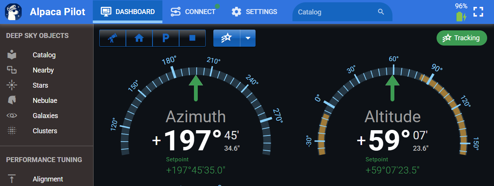
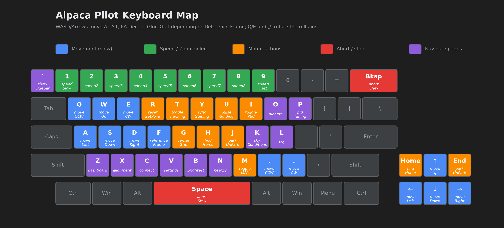
The Pilot App is completely optional. You can continue using Stellarium, NINA and CCDCiel with the Alpaca Driver just as you did in version 1.0, no changes required. However, choosing not to use the Pilot App means missing out on a range of enhancements that are available to you.
The Pilot App was built to:
- Simplify the Polaris connection and startup process, eliminating the need to use the official Benro Polaris app on startup
- Make it easy to set the observing site’s latitude and longitude
- Eliminate manual editing of the config.toml configuration file
- Offer an expanded Deep Sky Catalog that surpasses Benro’s default catalog
- Enable precise motion control using geographic or equatorial coordinates
- Provide insight into the performance and diagnostics of Driver features
- Allow advanced users to fine-tune Driver performance parameters
Pilot Main Menu¶
The main menu of the Alpaca Pilot application provides centralized access to key functions, status indicators, and configuration tools for managing your Polaris mount. Each element is designed to streamline your workflow and provide intuitive control over the system.
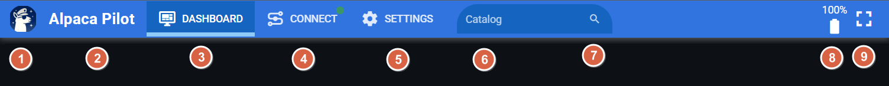
-
① Sidebar Menu: Opens the collapsible side navigation menu, giving access to additional modules such as Deep Sky Objects, Performance Tuning and Documentation.
-
② Startup Page: Clicking the Title will display the initial startup page of the Alpaca Pilot App.
-
③ Dashboard: Provides real-time control and feedback for mount operations. Includes radial dials, setpoint controls, status indicators, and visual feedback for guiding, tracking, and slewing.
-
④ Connect: Initiates or terminates the connection to the Alpaca Driver and Polaris mount. This button reflects current connection status.
-
⑤ Settings: Opens the configuration panel where you can set observing site latitude/longitude, define the park position, adjust preferences, and enable standard and advanced features.
Note: Location services are restricted in browsers on mobile phones and the Locate function in Settings will only work over HTTPS. Refer to the instructions below to enable HTTPS in Alpaca Pilot.
-
⑥ Search Entry: A text input field for searching catalog entries and targets. Supports shorthand formats and intelligent parsing for quick access to celestial objects.
-
⑦ Search Toggle: Toggles the visibility of the search entry field. On narrow screens, it also expands the search input area for easier access. When a search term is present, this button acts as a quick-clear control to reset the entry.
-
⑧ Polaris Battery: Displays the current battery level of the Polaris mount. Includes color-coded indicators or warnings when battery levels are low. Also indicates charging status. On narrow screens, it can also be used to toggle fullcscreen.
-
⑨ Fullscreen: Toggles fullscreen mode for immersive operation. This is especially useful during outdoor sessions or when using compact displays, allowing maximum space for control and feedback elements.
I. Launching the Alpaca Pilot Application¶
VIDEO DEMO: 22 - Launching Alpaca Pilot
The Alpaca Pilot App can be accessed via external imaging software or directly through a web browser on a desktop, tablet, or phone.
Method A: Launching from NINA (Nighttime Imaging 'N' Astronomy)¶
If you are using NINA, you can launch the Alpaca Pilot App directly from the NINA equipment setup interface:
- Access Equipment Setup: Navigate to NINA's Equipment setup.
- Mount Connection: Choose the device for the ABP driver.
- Use Settings Cog: Before connecting, click the settings cog button.
- Fire Up App: Clicking the settings cog will fire up the Alpaca Pilot application, allowing you to monitor the connection process in detail.
Method B: Launching via Web Browser¶
You can access Alpaca Pilot from any browser on a device connected to the same network as the Mini-PC.
- Start Driver: Make sure the driver is running on the Mini-PC.
- Open Browser: On your phone, tablet, or laptop, open any modern browser.
- Open Alpaca Pilot: Enter one of the following in the browser's address bar:
- Recommended:
http://ap.local(orhttp://ap.local:8080/for Linux/Pi installations) - Hostname: eg
http://hostname - IP Address: eg
http://192.168.10.250
- Recommended:
- Full Screen Feature: On a phone, you can click on the battery icon to make the application go full screen to take up the full real estate available.
Method C: Launching Multiple Instances¶
The Pilot application is very flexible, allowing users to open up multiple windows simultaneously to facilitate operations and monitoring. To achieve this, you can right-click or hover on any of the navigation links across the top of the application (such as Dashboard, Connections, or Settings) and choose to open them in a new tab or a new window.
For example, you might choose to open the Catalog as a new window and position it off to the right, while keeping the main Dashboard open on the left. This configuration allows for streamlined workflows, such as performing quick searches for celestial objects in the Catalog while monitoring the mount's status and coordinates on the Dashboard as you navigate to the selected target.
Frequently asked questions
### What are `ap.local` and mDNS? Alpaca Driver **v2.2 and later** include an mDNS (Multicast DNS) server. mDNS allows devices on the same local network to discover the Alpaca Driver and Alpaca Pilot Web Server without requiring a central Domain Name Server (DNS). The Alpaca Pilot web interface is advertised on the local network using mDNS with the default hostname: You can change the hostname advertised by mDNS from Alpaca Pilot's **Connect** page using the **Network Services** dialog. The `ap.local` address should work when the device running your browser and the device running the driver are connected to the same local network. It will not normally work across different networks or routed subnets. Some enterprise networks, browsers, Wi-Fi configurations, firewalls, and security policies may also block or restrict mDNS traffic. If you cannot reach Alpaca Pilot using `ap.local`, use the driver's hostname or IP address instead, as described below. mDNS is **optional** and is not required for the Alpaca Driver or Alpaca Pilot to operate. If you can already access Alpaca Pilot using the device hostname or IPv4 address, mDNS simply provides an alternative method of access. ### What alternative methods can be used to reach Alpaca Pilot? There are three ways to reach Alpaca Pilot: 1. **Use mDNS** On networks where mDNS is supported by both the network and the client device, use: 2. **Use the driver's hostname** If the hostname can be resolved by the device running the browser, replace `2026-09-24T18:47:05.665 INFO ==STARTUP== Serving mDNS hostname [http://ap.local](http://ap.local) -> 192.168.50.73:80
II. Connecting Devices¶
VIDEO DEMO: 21 - Connecting to the Driver and Polaris
When you start the Alpaca Driver, it will automatically attempt to try and connect to the Benro Polaris. The normal sequence of startup events using Alpaca Pilot are as follows:
- A. Start Alpaca Driver
- B. Launch Alpaca Pilot
- C. Power-on the Polaris ane enable Wifi
- D. Connect to the Polaris
- E. Setup the Polaris for Astro Mode
A. Start Alpaca Driver¶
After you have installed the Alpaca Driver, you can start the Driver either from a terminal or from the shortcut link you setup.
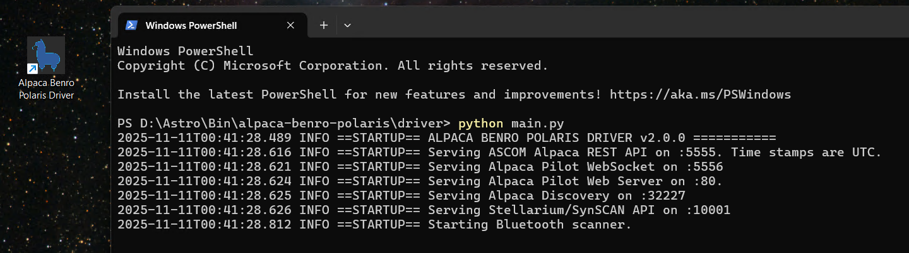
B. Launch Alpaca Pilot¶
Follow the instructions from the previous section to launch the Alpaca Pilot Application. Navigate to the Connect page to monitor the startup process.
When you launch the Alpaca Pilot application, it attempts to automatically connect to the Alpaca Driver. In most cases, this connection is established without user intervention. However, if the Driver is not running or network connectivity is lost, you may need to reconnect manually.
If a connection issue is detected, a warning banner will appear. You can then navigate to the Connect page to re-establish communication with the Driver.
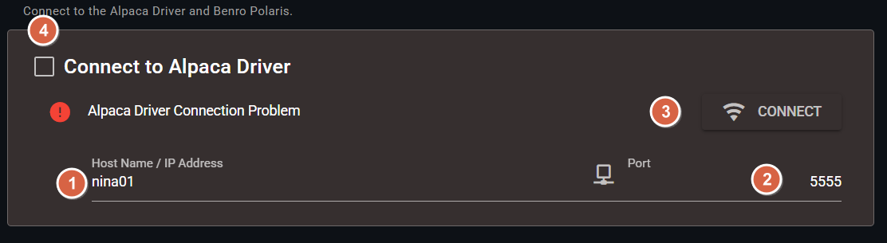
-
① Driver Host Name / IP Address: Enter the hostname or IP address of the mini-PC where the Alpaca Driver is running.
Note: This is not the IP address of the Polaris device. -
② Driver Port: Specifies the port used by the Alpaca Driver’s ASCOM REST API. The default is 5555. If you’ve changed this value in the network services, be sure to update it here as well.
-
③ Initiate Connection: Click this button to manually initiate or retry a connection to the Alpaca Driver.
-
④ Driver Connection Checkbox: Toggles the connection status with the Alpaca Driver.
- When disconnected, it functions the same as the Initiate Connection button.
- When connected, clicking this will disconnect the session.
C. Power-on the Polaris ane enable Wifi¶
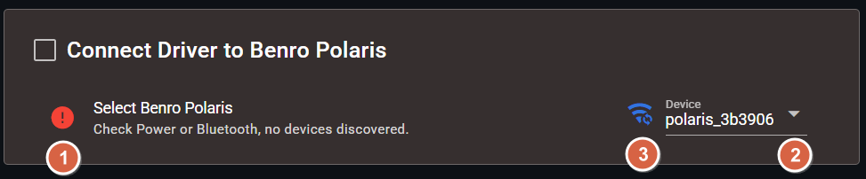
-
① Power On the Polaris: The Alpaca Driver uses Bluetooth Low Energy (BLE) to discover nearby Benro Polaris Devices. If none are discovered, check the power of your Benro Polaris Device.
Note: Bluthooth is only used for discovery and enabling Wifi. It is entirely optional. It is not used in normal operation of the Polaris.
-
② Select a Device: Detected devices appear in the Device dropdown. The first discovered device is selected automatically. If multiple devices are listed, choose the one you wish to connect to.
-
③ Enable Wi-Fi: The Driver will attempt to enable the selected Polaris’s Wi-Fi hotspot automatically.
- You can also manually trigger this by clicking the Wi-Fi button next to the device dropdown.
- If the Blue LED on the Polaris does not illumunate after 30s, you may need to use the Benro Polaris App to discover nearby devices, and enable its Wifi.
- Once Wi-Fi is successfully enabled, the Blue LED on the Polaris should illumunate.
- On Windows and Raspberry Pi, the Wi-Fi button also automatically joins the host itself to the Polaris hotspot once it's enabled — you shouldn't need to touch the OS's own Wi-Fi settings at all in the normal case. (macOS doesn't yet auto-join — see below.)
-
Confirm Wifi Connection: If the drivers host hasn't joined automatically after step ③, check the Log page for a "Failed to join WiFi network" message. To join the Polaris network manually:
-
on Win11, monitor the systems Wifi List for a polaris_xxxxxx hotspot, click on it, enable automatic connection, and click Connect. Once the host has connected to the Polaris Wifi Hotspot, it should appear as follows:

-
On Raspberry Pi, see raspberrypi.md's network troubleshooting to join manually via
join_wifi.pyornmcli.
-
D. Connect to Polaris¶
Once Wifi network connectivity has been established to the Polaris, the Driver should automatically connect. If you have problems connecting to the Polaris, the following fields allow you to manually initiate a connection with custom settings.
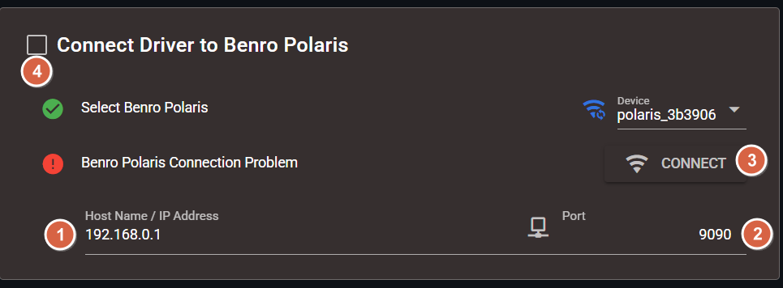
-
① Polaris Host Name / IP Address: This will typically remain as 192.168.0.1. Enter the hostname or IP address of the Polaris Device.
Note: This is not the IP address of the Alpaca Driver. -
② Polaris Port: This will typically remain as 9090. Specifies the port used by the Polaris.
-
③ Initiate Connection: Click this button to manually initiate or retry a connection to the Polaris.
-
④ Polaris Connection Checkbox: Toggles the connection status with the Polaris.
- When disconnected, it functions the same as the Initiate Connection button.
- When connected, clicking this will disconnect from the Polaris.
Troubleshooting Guide If you continue to experience issues connecting to the Polaris, consult the Troubleshooting Guide for diagnostic steps and solutions.
E. Setup the Polaris for Astro Mode¶
Follow these steps to prepare your Benro Polaris mount for Astro Mode using the Alpaca Pilot App:
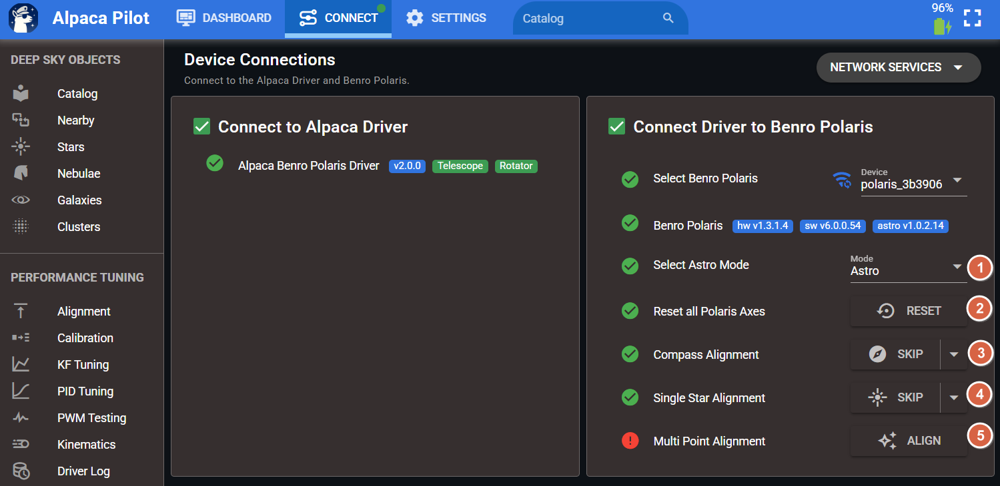
-
① Switch to Astro Mode: When the Pilot App launches, it will display the current Polaris mode. This is typically Photo Mode on first power-up. Use the dropdown menu to switch to Astro Mode.
-
② Initiate Axis Reset: Click the Reset button to command the Polaris to reset all three axes. This replicates the double-tap gesture on each joystick in the Benro Polaris App.
Wait for Reset Completion
Allow the mount to finish its reset sequence. Wait until all axes reach their final positions and all motion ceases. -
③ Skip Compass Alignment: Normally, entering Astro Mode requires a Compass Alignment via the Benro Polaris App. With Pilot, you can bypass this by pressing Skip.
- The default Azimuth is 180°
- You may adjust this to approximate the camera’s initial pointing direction, based on how the tripod is oriented.
- Note: This value represents true Azimuth and is different from the Compass Align direction used in the Benro app.
- Azimuth reference: 0°=North, 90°=East, 180°=South, 270°=West.
- Saving Alpaca Pilot Settings will store this value.
-
④ Skip Single Star Alignment: Astro Mode also typically requires a Single Star Alignment. You can skip this step in Pilot by pressing Skip.
- The default Azimuth is 180°, and Altitude is 45°
- You may adjust these to match the camera’s iniital pointing direction, based on how the tripod is oriented.
- Azimuth reference: 0°=North, 90°=East, 180°=South, 270°=West.
- Altitude reference: 0°=Horizontal, 10°=Slight upward tilt, 45°=Moderately upward, 82°=Near maximum upward tilt of Polaris.
- Saving Alpaca Pilot Settings will store these values.
-
⑤ Multi Point Alignment: Click this Button to navigate to the Alignment Page. This will allow you to enable to Multi-Point Alignment and review model residuals. After 3 or more Sync Points are added to the model this indicator will turn green. If you are using Single Point Alignment, you can ignore this red indicator on the connect page.
-
Set Observing Site Location: If the app displays a warning that latitude and longitude are unset, go to Settings in the menu bar.
- Use the map to locate your observing site and click to set it, or click Locate to use the browser's location.
- The app will attempt to auto-fill altitude, pressure, and location name via a web service. Without internet, the location is named by its coordinates.
- GPS receiver (optional): at a dark site without internet, a USB GPS receiver plugged into the computer running the Alpaca Driver can set the site instead. Click the arrow beside Locate and choose Use GPS Receiver. Choose its Serial Port (GPS receivers are marked in the list), then click OK and Locate (GPS). The button shows its progress while it waits for three matching GPS fixes, then sets latitude, longitude and elevation.
- If the GPS receiver can't get a fix, give it a clear view of the sky. Its first fix after being plugged in can take several minutes. Plug it directly into the computer rather than a USB hub, and keep it away from cameras and their cables, which can block GPS signals.
- Linux also offers GPS Daemon (GPSD), and the Raspberry Pi guide has Pi-specific notes.
- Click Save at the top of Settings so the location and GPS settings are kept after a restart.
-
Begin Plate Solving: With setup complete, you're ready to use the Driver and perform your first plate solve.
F. Network Services¶
The Network Services Dialog on the Connect page is optional, but provides advanced control over how the Alpaca Driver exposes its network services. You can selectively disable specific services or change the network port they use.
This is primarily useful for:
- Reducing the network surface area of the Driver for security or performance reasons
- Resolving port conflicts with other services running on the same system
Additionally, this dialog allows you to modify the Driver’s behavior regarding automatic reconnection to the Polaris mount. You can disable auto-reconnect if manual control is preferred or if the mount is temporarily unavailable.
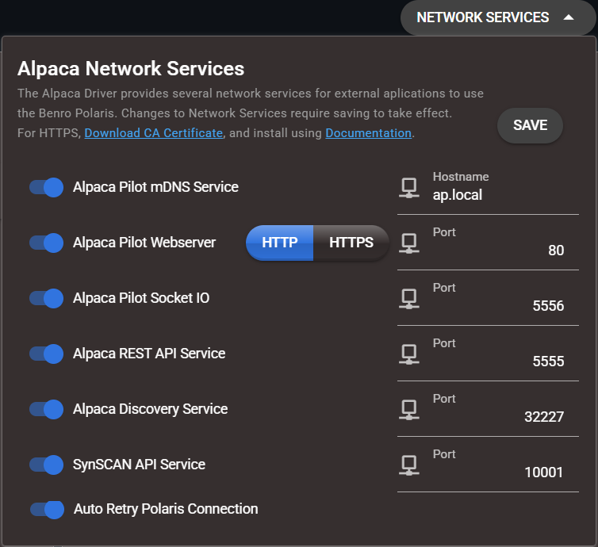
G. Using Alpaca Pilot over HTTPS¶
By default, Alpaca Pilot runs as an HTTP-based Single Page Application (SPA). As a result, your browser may display the site as “Not Secure” and restrict certain features such as location access and clipboard integration.
Starting with version 2.2, Alpaca Pilot supports HTTPS, allowing secure browser access and full functionality. When the Driver starts it will create self-signed certificates that are used for secure access. To use HTTPS you will need to download and install the CA Certificate and enable HTTPS in Alpaca Pilot.
Download the CA Certificate¶
- Open the Alpaca Pilot Connect page.
- Open the Network Services dropdown dialog.
- Click Download CA Certificate.
Install the CA Certificate on Windows¶
- Open the downloaded
alpaca_pilot_ca.crtfile. - Click Install Certificate.
- Select Local Machine, then click Next.
- Accept User Access Control, click Yes.
- Choose Place all certificates in the following store, then click Browse.
- Select Trusted Root Certification Authorities, then click OK.
- Click Next, then Finish.
Install the CA Certificate on macOS¶
- Open the downloaded
.crtfile — Keychain Access will launch automatically. - Add the certificate to the System keychain.
- Locate
alpaca-pilot-cain the certificate list and double-click it. - Expand the Trust section and set When using this certificate to Always Trust.
- Close the dialog and enter your password to confirm the changes.
Install the CA Certificate on iOS / iPadOS¶
- Open the Alpaca Pilot Connect page in Safari and download the CA certificate (Safari will prompt that a profile is ready to install).
- Go to Settings → General → VPN & Device Management, tap the alpaca-pilot-ca profile, then tap Install in the top-right corner (you'll be prompted for your device passcode).
- This alone is not enough — the CA is installed but not yet trusted. Go to Settings → General → About → Certificate Trust Settings.
- Under Enable Full Trust for Root Certificates, toggle alpaca-pilot-ca to on.
Restart Your Browser to pickup the new CA Certificate¶
- Chrome: Navigate to
chrome://restart - Safari: Fully close Safari (swipe it away from the App Switcher)
-
Firefox:
- Open
about:config - Search for
security.enterprise_roots.enabled - Set the value to
true - Restart Firefox
- Open
Enable HTTPS in Alpaca Pilot¶
- Open the Alpaca Pilot Connect page.
- Open the Network Services dropdown.
- Select HTTPS, then click Save.
- The Driver will restart with HTTPS enabled.
- Alpaca Pilot will detect the restart and redirect to HTTPS.
Persistent Certificate Warnings¶
If you're upgrading from an earlier driver version and still see certificate warnings or connection failures after following the steps above, the browser or the OS may be holding onto stale security state from before the upgrade.
On Windows, do a full power-off rather than Restart. Windows 11 enables "Fast Startup" by default, which hibernates the session instead of fully reinitializing it on Restart. Leftover network state can persist across a restart; only a genuine power-off clears it.
On any device that connected to an earlier version of the driver, also clear that browser's site data
- Chrome/Edge: Settings → Privacy and security → find the site under "All sites" and delete its data;
- Safari on iOS/iPadOS: Settings → Safari → Clear History and Website Data
III. Using the Dashboard¶
VIDEO DEMO: 21 - Dashboard introduction
VIDEO DEMO: 22 - Dashboard Status and Setpoint Entry
Purpose of the Dashboard¶
The dashboard is the central component of the Alpaca Pilot App. It basically shows you the current orientation of the telescope and any activity on the motors. It provides real-time telemetry of the mount's current coordinates, including Azimuth, Altitude, Roll or Right Ascension, Declination, Position Angle. The Dashboard also provides direct control of the mount through action buttons and interaction into zoomable radial dials for each co-ordinate.
Action Buttons¶
The action buttons in the top-left corner of the Dashboard offer quick access to global mount controls.
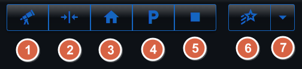
- ① Co-ordinate Mode: This feature allows you to quickly switch between two primary coordinate systems for viewing and control:
- Geographical - Azimuth, Altitude, and Roll.
- Equatorial - Right Ascension, Declination, and Position Angle.
- ② Reset SP (Set Point): This button appears when the mount’s actual position (Present Value) has deviated from the desired target position (Set Point). This may occur when the mount is controlled by a non Alpaca Application or when the mount is not physically able to reach the setpoint. Clicking the Reset Set Point button instructs all set points to reline up with the current physical values of the device.
- ③ Find Home: When clicked, it moves the motors and changes the orientation of the mount to wind the motor angles (M1, M2, M3) back to zero. If the mount is set up pointing south, this typically results in an Azimuth of 180°, an Altitude of 45°, and a Roll of 0°. If the mount cannot complete this movement within
- ④ Park: This function moves the mount into a designated park position. You can customize and save the park position motor angles from the settings page. Once the mount reaches the park location, a yellow banner will appear, and most functions are disabled; you must click a button to unpark to resume use.
- ⑤ Stop: This button allows you to immediately stop the mount. This is equivalent to an Abort Slew operation and will stop motion across all axes.
- ⑥ Tracking: This action button controls the mount's sidereal tracking state. It allows you to initiate tracking or turn tracking off. Ensure you have tracking enabled for plate-solving or imaging deep sky objects as it is no longer automatically enabled after gotos
- ⑦ Tracking Rate: This control allows you to change the tracking rate of the mount. The Alpaca Driver version 2.0 supports ASCOM Alpaca Drive Rates, including 0=Sidereal, 1=Lunar, 2=Solar, 3=Custom/King.
Status Indicator¶
The Status Indicator (a status chip in the top right-hand corner of the Dashboard) gives the state of the motion controller in the Alpaca driver. Only one state is given at a time, but they are all listed here for explaination purposes.
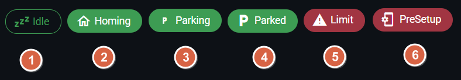
- ① Idle: This state means no commands are currently being issued from the driver to the Polaris. In this state, the Benro Polaris (BP) app can be used without the driver interfering.
- ② Homing: The mount is actively moving its motors back to the zero position (0, 0, 0 motor angles).
- ③ Parking: The mount is moving into the customized park motor angle position.
- ④ Parked: The mount has reached the set park location. A banner appears, and most functions are disabled until the mount is unparked.
- ⑤ Limit: This indication appears on the dashboard when a motor angle limit has been exceeded. All control to the Polaris will be stopped. The user must click the reset button to acknowledge the limit.
- ⑥ PreSetup: This flag or alarm indication appears when the observing site location (latitude, longitude) has not been set. No action can be taken with the mount until the location is set.
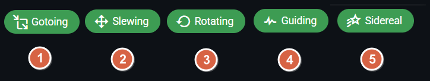
These indicators reflect the mount’s current motion or tracking mode:
- ① Gotoing: The mount is slewing to a target position following a GOTO command.
- ② Slewing: The mount is executing a manual slew operation.
- ③ Rotating: The mount is actively adjusting its rotation or position angle.
- ④ Guiding: The mount is responding to pulse-guiding commands to refine its tracking.
- ⑤ Sidereal: - Sidereal tracking is enabled. The mount is following the apparent motion of the stars, maintaining fixed equatorial coordinates.
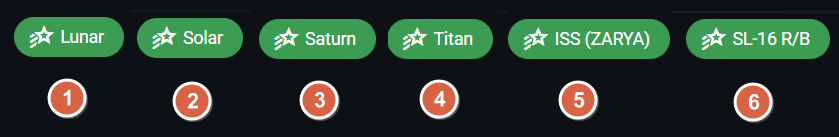
When tracking an orbital object, the motion deviates from sidereal tracking. The indicator will instead display the name of the object being tracked:
- ① Lunar: Tracking the Moon’s motion.
- ② Solar: Tracking the Sun’s motion.
- ③ Saturn: Tracking a planetary target.
- ④ Titan: Tracking a planetary moon.
- ⑤ ISS (ZARYA): Tracking the International Space Station.
- ⑥ SL-16 R/B: Tracking a rocket body (spent stage).
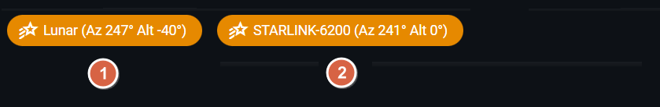
When an orbital object is below 10° altitude, the status indicator turns orange, and its current position is appended to the tracking chip. In this state, the mount does not update its setpoint, allowing you to preselect and monitor targets before they become visible. Once the object rises above 10°, the mount will automatically slew to its position and begin tracking.
- ① Lunar below the Horizon: The Moon is currently at −40° altitude. The mount is standing by and will begin tracking once it rises.
- ② Starlink below 10°: The communications satellite is below the 10° threshold. The mount is waiting to initiate tracking.
Motor Indicators¶
The dashboard shows any activity on the motors and the current M1, M2, and M3 motor angles. These angles show the actual physical rotation of each motor from its home position. Importantly, unlike coordinate axes (like azimuth), the motor angle does not wrap around at 360 degrees; it keeps recording how far the motor has moved.
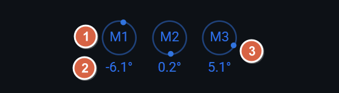
- ① Motor Label: The labels M1, M2 and M3 represent the Azimuth, Altitude and Astro axis accordingly.
- ② Angular Offset: The signed angular rotation in decimal degrees that each motor has traveled from its home or zero position.
- ③ Motor Activity: The orbiting dot, represents motion in the corresponding axis. It rotates in the direction and speed of the motors motion. The speed is exegerated for slow motion so very fine movement can be seen.
Radial Dials¶
The radial dials are a core part of the dashboard, designed to be flexible and interactive. They provide a quick representation of the current orientation of the mount, either in geographic or equatorial co-ordinates.
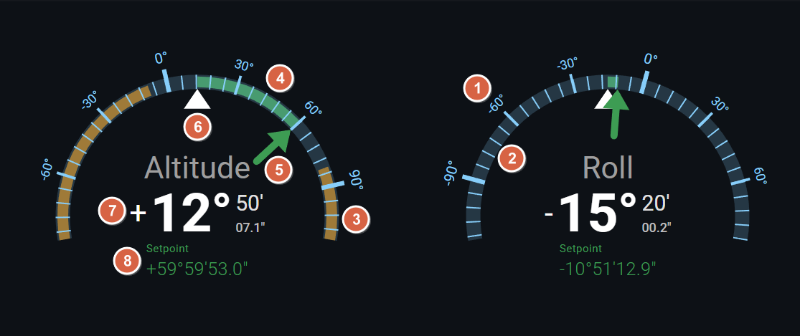
- ① Scale Label: Displays the rounded numeric values associated with a major tick on the radial dial. Clicking or Tapping on the numeric label will change the Setpoint of that co-ordinate to the given value.
- ② Scale Bar: The cyan arc indicates an angular scale, marked with 5 minor ticks of equal distance dividing the major ticks. Clicking or tapping on the scale bar will change the Setpoint to the exact value at that point.
- ③ Warning Bar: A orange arc that highlights regions of the scale where values exceed safe or expected limits. If a pointer enters this zone, it may indicate that the angle is not reachable.
- ④ Deviation Bar: A green arc that indicates the real-time difference between the setpoint (SP) and the present value (PV). The arc represents the path that the mount will travel to close the deviation to zero.
- ⑤ SP Pointer: A green arrow pointing to the current Setpoint target value the system is trying to achieve. It remains fixed unless the setpoint is adjusted.
- ⑥ PV Pointer: A white triangle pointing to the Present Value of the axis. This pointer will always point to the top center of the arc. As the mount moves in real time, the scale will rotate around this pointer.
- ⑦ PV Readout: A numeric display of the Present Value in Degrees, Arc-Minutes and decimal Arc-Seconds (except for Right Ascension which is in Hours, Minutes and Seconds).
- ⑧ SP Readout: A numeric display of the current Set Point. This value reflects the target the system is actively trying to maintain.
When you hover your mouse or tap your finger on a radial dial, additional buttons will appear allowing you to interact with that co-ordinate.
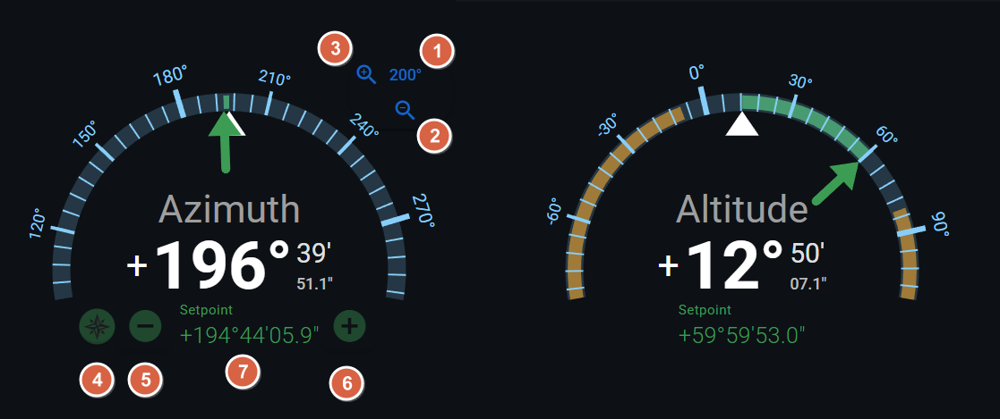
- ① Range Readout: Displays the total angular span of the radial dial, measured from left to right. This value also determines the slew rate when adjusting the Set Point using controls ⑤ or ⑥. Specifically, the slew rate is equal to (Range ÷ 20) degrees per second. As a result, it takes approximately 20 seconds to move the Set Point across the full range of the dial.
- ② Increase Range: - Expands the scale range to accommodate larger values. Use this when the current range is too narrow or when values are changing too rapidly to interpret clearly. Scrolling the mouse wheel upward has the same effect as this control.
- ③ Decrease Range: Narrows the scale range to enhance resolution and visual precision. This is especially useful when movements are subtle and you want finer detail in the display. Scrolling the mouse wheel downward performs the same action as this control.
- ④ Floating Action Buttons: - Toggles the visibility of context-sensitive presets for quickly adjusting the Set Point. The available presets depend on the coordinate type of the active radial dial:
- Azimuth: North 0°, East 90°, South 180°, West 270°
- Altitude: 0°, 30°, 45°, 60°
- Roll: ZM2, –60°, –30°, 0°, +30°, +60°. ZM2 (Zero M2) Rotates to the roll angle that minimises M2 movement over the next 2 hours of tracking, within the permitted roll limits. M2 supports the camera's weight off-axis, so a heavy lens can make it struggle to track smoothly at sidereal rates, causing regular dips in tracking performance. Use ZM2 to minimise M2 movement and reduce these disturbances.
- ⑤ SP Decrease
Decreases the current setpoint (SP) by a fixed increment, determined by the active Range setting. Use this to manually slew the target value downward.
Note: The mount may take a moment to respond and align with the new setpoint. - ⑥ SP Increase
Increases the current setpoint (SP) by a fixed increment, based on the current Range. Use this to manually slew the target value upward.
Note: The mount may take a moment to respond and align with the new setpoint. -
⑦ SP Data Entry
Enables direct numeric input of the setpoint value. Ideal for precise adjustments or bypassing incremental steps. After entering the desired value, confirm to apply it. The input field supports a variety of formats:Absolute Setpoint Formats
90.234— Decimal degrees (or hours for Right Ascension)90:30— Degrees and minutes90:30:25.2— Degrees, arcminutes, and decimal arcseconds:30.5— Decimal arcminutes-90— Negative decimal degrees
Relative Setpoint Formats
d-2— Decrease by 2 degrees (or hours for Right Ascension)d:30— Increase by 30 arcminutesd::40— Increase by 40 arcsecondsd2.5— Increase by 2.5 decimal degrees
IV. Using the Catalog¶
VIDEO DEMO: 22 - Alpaca Pilot Catalog
The Alpaca Pilot application features an expanded and intuitive catalog designed to simplify the selection and targeting of celestial objects for astrophotography. This guide details the catalog's contents, how to navigate, filter, and use it for slewing and alignment.
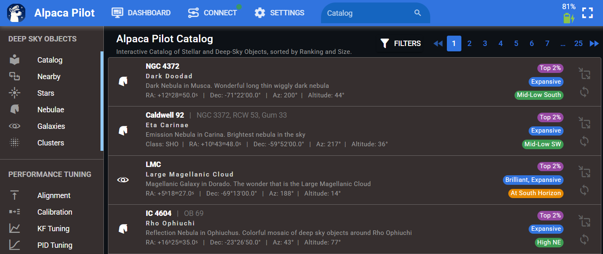
What the Catalog Includes¶
The catalog in the Alpaca Pilot App has been significantly expanded beyond the original Benro Polaris catalog.
- Curated Content: Instead of listing thousands of objects, the catalog focuses on quality. It includes a curated selection of over 500 premium deep sky objects. These targets highlight the top 25% of imaging targets, based on input from experienced astrophotographers.
- Object Types: The entries can include a selection of Nebulae, Galaxies, Clusters, Stars, Planets, Moons, Satellites, Comets, Asteroids and Landmarks.
- Ratings and Notes: Each entry provides helpful notes and community ratings to guide your choices. To keep the application footprint small, items categorized as "typical," "hard," or "avoid" are excluded from the base catalog.
- Cross Referenced: Each entry is cross referenced to over 25 master catalogs like Messier, Caldwell, NGC, IC, H400, Sh2, LDN etc.
Understanding Catalog Visual Indicators (Chips)¶
Each target listing features three coloured chips that provide a quick visual summary of the object's characteristics and current position:
| Chip Colour | Name | Information Provided | Examples of Categorization |
|---|---|---|---|
| Purple | Rating | Indicates the item's imaging rating. By default, the catalog is searched with the most highly rated items listed first. | Categories are used to filter to the top 25% of targets for imaging suitability. |
| Blue | Visibility | Shows the brightness (apparent magnitude) and angular size of the object. | Size: Greater than 100 arc minutes (e.g., Carina Nebula), Extended (30-100 arc minutes), etc.. Brightness: Brilliant (magnitude < 2), Bright (2–4), Visible, Dim, Faint (up to magnitude 10). |
| Yellow | Position | Gives a quick, readable sense of the target's position in the sky (azimuth and altitude). | Examples include "mid low in the southwest," "high in the north," or "near the horizon". Items high above 82 degrees (near zenith) or "below the horizon" are flagged as red. |
Searching the Catalog¶
The search system is designed to be fast, intuitive, and efficient for target selection. You can find any object by simply typing a few letters or numbers of its name or catalogue reference.
-
Search by Name: Enter part of the object’s common name.
- Example: “rig” → Rigil Kentaurus.
- Example: “pole” → North Celestial Pole.
-
Search by Reference: Enter part of the object’s catalogue designation.
- Example: “M8” → Lagoon Nebula
- Example: “NGC 5139” → Omega Centauri
Common catalogue prefixes include M, NGC, IC, C (Caldwell), Abell, Arp, H (Herschel), LDN, and others. For a full list of supported catalogues, see the Reference Catalogues section.
Filtering Results¶
You can filter targets by various key attributes that affect imaging suitability, including Type, Proximity, Quality Rating, Altitude, Classification, Angular size, Apparent magnitude (brightness).
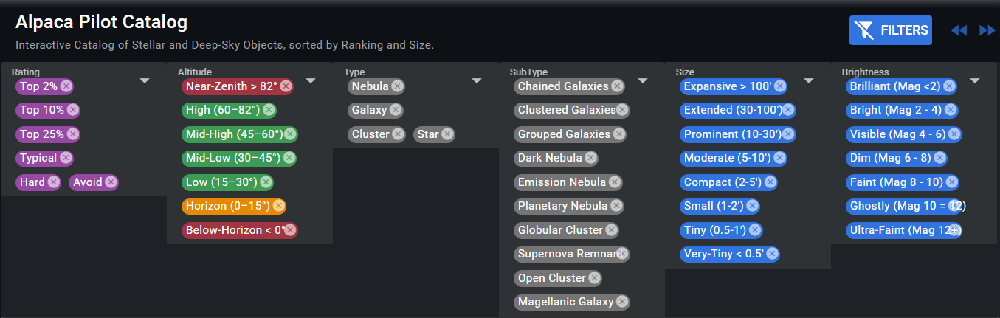
- Filtering by Type (Side Menu): Use the side menu to limit results by broad object type, such as Nebula, Galaxy, Cluster, Star, Planet, Moon, Satellite, Comet, Asteroid or Landmark.
- Filtering by Proximity (Side Menu): Displays objects sorted by angular proximity to the telescope’s current pointing or the mount’s orientation. Ideal for finding nearby targets without slewing far.
- Filtering by Quality Rating (Dropdown): Filter by the visual and imaging quality rating of each object, eg Top 2%, 10%, 25%.
- Filtering by Altitude (Dropdown): Limit the list based on the height of the object in the sky.
- Filtering by Classification (Dropdown): Filter by fine grained classification of the subtype of the object.
- Filtering by Size (Dropdown): Filter by apparent angular size of the object
- Filtering by Brightness (Dropdown): Filter by visual brightness (magnitude) for selecting objects suited to your observing or imaging conditions
GoTo (Slew) to the Target¶
To move the mount to a target's location, simply click the GoTo button associated with the item, and the mount will start moving to that location.
- Tracking State Preservation: When you issue a GoTo command, the driver will preserve whatever the tracking state was at the time; it does not automatically turn tracking on.
- Roll Angle Preservation: When you issue a GoTo command, the driver will preserve whatever the roll angle state at the time; it does not reset back to zero. When in equitorial model, the Roll Angle is still preserved, and the corresponding Position Angle for that orientation is selected.
Sync with a Target¶
If the object you have selected is already visible in your camera’s field of view, you can use the sync function to align the mount's coordinates precisely. Syncing helps the Driver understand where the telescope is pointing compared to where Polaris thinks it is, correcting any upstream misalignment.
Reference Catalogs¶
Alpaca Pilot’s select list of objects are cross-referenced with more than 25 master catalogues, encompassing the most popular and scientifically significant deep-sky objects observed by both amateur and professional astronomers.
| Catalogue | Description | Objects |
|---|---|---|
| General Catalogues | ||
| Messier (M) | Classic list of 110 bright deep-sky objects compiled by Charles Messier (~1774). | 110 |
| Caldwell (Caldwell) | Patrick Moore’s 1995 complement to Messier, covering both hemispheres. | 109 |
| Herschel 400 (H) | 400 of William Herschel’s best nebulae and clusters from his 18th-century survey. | 400 |
| New General Catalogue (NGC) | The main reference catalogue for deep-sky objects (~1888). | 7,840 |
| Index Catalogue (IC) | Supplement to the NGC with later discoveries (~1912). | 5,386 |
| Henry Draper (HD) | Comprehensive stellar catalogue listing over 225,000 stars, compiled at Harvard College Observatory (1918–1924). Each star is identified by spectral type and magnitude. | 225,300+ |
| Galaxy Catalogues | ||
| Abell | Clusters of galaxies—the largest bound structures in the universe (~1958). | 4,073 |
| Arp | Atlas of 338 “peculiar” or interacting galaxies (~1966). | 338 |
| Hickson | Compact groups of small, closely packed galaxies (~1982). | 100 |
| PGC | Principal Galaxies Catalogue—comprehensive all-sky galaxy list (~1995). | 73,197 |
| UGC | Uppsala General Catalogue—northern hemisphere galaxies (~1973). | 12,921 |
| Planetary Nebulae Catalogues | ||
| Abell | Old planetary nebulae from Palomar Sky Survey (~1966). | 86 |
| Minkowski | PNe discovered in the 1940s; includes the M 1–4 series. | 207 |
| Kohoutek | Extensive PN survey by Luboš Kohoutek (~1967). | 1,500 |
| Griffiths | Modern visual selection of bright, interesting PN (~2012). | 45 |
| Nebulae Catalogues | ||
| Barnard | Classic dark nebulae photographed by E.E. Barnard (~1927). | 349 |
| LDN | Lynds Dark Nebulae from Palomar survey (~1962). | 1,802 |
| LBN | Lynds Bright Nebulae—bright diffuse nebulosity (~1965). | 1,025 |
| Sharpless (Sh 2-) | Emission nebulae and H II regions (~1959). | 313 |
| RCW | Southern emission nebulae (~1960). | 182 |
| Gum | Southern H II regions catalogue (~1955). | 85 |
| vdB | Reflection nebulae (~1966). | 159 |
| SNR | Galactic Supernova Remnants (~1984). | 294 |
| Other Special Catalogues | ||
| Hidden Treasures (HT) | Stephen O’Meara’s list of 109 overlooked but beautiful objects (~2007). | 109 |
| Secret Deep (SD) | Further 109 deep-sky highlights not in Messier or Caldwell (~2011). | 109 |
| Orphaned Beauties (OB) | Astrophotography-focused list of 109 large, under-appreciated objects (~2020). | 109 |
| Small Packages (SP) | 109 compact but fascinating small targets (~2020). | 109 |
| Satellites (ID) | NORAD-tracked artificial objects with known brightness and motion (~ongoing). | 32k+ |
| Solar System Bodies (IAU) | IAU-designated planetary and lunar objects including Sun, Moon, Planets, Moons | 30+ |
Extending the Alpaca Pilot Catalog¶
Alpaca Pilot includes a built-in deep-sky catalog, planetary data, and live orbital objects. However, you may also extend the catalog with your own custom entries, including local landmarks, favourite observing targets, or additional DSOs not included in the standard database.
Custom items are defined in a file named catalog.json placed in the Alpaca Driver’s data directory.
Whenever Alpaca Pilot loads or you refresh a catalog page (via F5), the Pilot application requests this file from the Driver. If it exists and contains valid entries, those entries are merged directly into the main catalog and displayed alongside all standard objects.
Once loaded, your user-defined entries are fully integrated into Alpaca Pilot. They appear alongside the standard catalog and support all normal features, including search, filtering, sorting, and object interaction.
File Format Overview¶
A sample file named catalog.sample.json is included in the data directory to help you get started.
To create your own custom catalog entries, simply copy this file to catalog.json and edit/add the values as needed. The sample outlines the required structure and field names, making it easy to add, remove, or modify entities with confidence.
Your custom catalog.json file must follow standard JSON rules:
- The top-level structure must be an array (
[...]) - Each catalog entry must be an object with quoted field names (
"Name": "Example") - Field Names and Strings must be quoted
- Commas are required between fields and entries
- full-line comments beginning with
//are allowed - trailing commas on the last field or entry are allowed
Required Structure of an Entry¶
Each entry in catalog.json must follow the structure below.
All fields are optional except MainID, Name, and at least one co-ordinate pair
RA_hr,Dec_deg- Equatorial Co-ordinates of the entityAz_deg,Alt_deg- Topocentric Co-ordinates, only relevant for Landmarks ie C1=9
Adding the other fields provides richer detail and better UI integration.
{
"MainID": string, // A unique identifier for the object (e.g. "U001")
"Name": string, // Short human-readable name
"Notes": string, // Longer description shown in the UI
"Class": string, // Optional Class Object Classification Codes see below (e.g. "SHO")
"OtherIDs": string, // Comma-separated alternate identifiers
"Rt": integer, // Rating 0–5 (Showcase → Not recommended)
"Vz": integer, // Visibility class 0–7
"Sz": integer, // Apparent size class 0–8
"C1": integer, // Object Type (Galaxy, Nebula, Planet, Landmark, etc.)
"C2": integer, // Subtype (Spiral Galaxy, Emission Nebula, etc.)
"Cn": integer, // Constellation index (0–84)
"RA_hr": float, // Right Ascension (hours)
"Dec_deg": float, // Declination (degrees)
// OR, for Landmarks where C1=9, fixed non-celestial objects:
"Az_deg": float, // Azimuth position (degrees)
"Alt_deg": float // Altitude position (degrees)
}
Catalog Field Enumerations (Full Reference)¶
Several fields in the custom catalog use numeric codes rather than text labels. Alpaca Pilot converts these codes into readable descriptions for display. The tables below define every possible value for each enumeration.
Rating (Rt)¶
Represents an overall “quality” or showcase value of the object.
| Value | Meaning |
|---|---|
| 5 | Showcase (Top 2%) (Default) |
| 4 | Excellent (Top 10%) |
| 3 | Good (Top 25%) |
| 2 | Typical |
| 1 | Challenging |
| 0 | Not recommended |
Visibility (Vz)¶
Approximate naked-eye or binocular visibility based on magnitude.
| Value | Meaning |
|---|---|
| 0 | Ultra Faint (Mag 12+) |
| 1 | Ghostly (Mag 10–12) |
| 2 | Faint (Mag 8–10) |
| 3 | Dim (Mag 6–8) |
| 4 | Visible (Mag 4–6) |
| 5 | Bright (Mag 2–4) |
| 6 | Brilliant (Mag <2) |
| 7 | Unknown (Default) |
Size (Sz)¶
Apparent angular size of the object.
| Value | Meaning |
|---|---|
| 0 | Very Tiny (<0.5′) |
| 1 | Tiny (0.5–1′) |
| 2 | Small (1–2′) |
| 3 | Compact (2–5′) |
| 4 | Moderate (5–10′) |
| 5 | Prominent (10–30′) |
| 6 | Extended (30–100′) |
| 7 | Expansive (100′+) |
| 8 | Unknown (Default) |
Primary Type (C1)¶
The high-level category of object.
| Value | Meaning |
|---|---|
| 0 | Nebula |
| 1 | Galaxy |
| 2 | Cluster |
| 3 | Star |
| 4 | Planet |
| 5 | Moon |
| 6 | Satellite |
| 7 | Comet |
| 8 | Asteroid |
| 9 | Landmark (for Az/Alt) |
| 10 | Custom (Default) |
Subtype (C2)¶
A more specific classification depending on the primary type. All values are listed for completeness.
| Value | Meaning |
|---|---|
| 0 | Set of Chained Galaxies |
| 1 | Set of Clustered Galaxies |
| 2 | Set of Grouped Galaxies |
| 3 | Set of Merging Galaxies |
| 4 | Pair of Galaxies |
| 5 | Trio of Galaxies |
| 6 | Blue Compact Dwarf Galaxy |
| 7 | Collisional Ring Galaxy |
| 8 | Dwarf Galaxy |
| 9 | Elliptical Galaxy |
| 10 | Flocculent Galaxy |
| 11 | Lenticular Galaxy |
| 12 | Magellanic Galaxy |
| 13 | Polar Galaxy |
| 14 | Spiral Galaxy |
| 15 | Dark Nebula |
| 16 | Emission Nebula |
| 17 | Molecular Cloud Nebula |
| 18 | Planetary Nebula |
| 19 | Protoplanetary Nebula |
| 20 | Reflection Nebula |
| 21 | Supernova Remnant Nebula |
| 22 | Globular Cluster |
| 23 | Herbig–Haro Object |
| 24 | Nova Object |
| 25 | Open Cluster |
| 26 | Star |
| 27 | Star Cloud |
| 28 | Young Stellar Object |
| 29 | Planet |
| 30 | Dwarf Planet |
| 31 | Martian Moon |
| 32 | Galilean Moon |
| 33 | Saturnian Moon |
| 34 | Natural Satellite |
| 35 | Space Station |
| 36 | Satellite |
| 37 | Rocket Body |
| 38 | Space Debris |
| 39 | Comet |
| 40 | Asteroid |
| 41 | User-Defined (Default) |
Constellation (Cn)¶
Each number corresponds to a constellation by index.
| Value | Constellation |
|---|---|
| 0 | Andromeda |
| 1 | Antlia |
| 2 | Apus |
| 3 | Aquila |
| 4 | Aquarius |
| 5 | Ara |
| 6 | Aries |
| 7 | Auriga |
| 8 | Boötes |
| 9 | Canis Major |
| 10 | Canis Minor |
| 11 | Canes Venatici |
| 12 | Camelopardalis |
| 13 | Capricornus |
| 14 | Carina |
| 15 | Cassiopeia |
| 16 | Centaurus |
| 17 | Cepheus |
| 18 | Cetus |
| 19 | Chamaeleon |
| 20 | Circinus |
| 21 | Cancer |
| 22 | Columba |
| 23 | Coma Berenices |
| 24 | Corona Australis |
| 25 | Corona Borealis |
| 26 | Crater |
| 27 | Crux |
| 28 | Corvus |
| 29 | Cygnus |
| 30 | Delphinus |
| 31 | Dorado |
| 32 | Draco |
| 33 | Eridanus |
| 34 | Fornax |
| 35 | Gemini |
| 36 | Grus |
| 37 | Hercules |
| 38 | Horologium |
| 39 | Hydra |
| 40 | Leo Minor |
| 41 | Lacerta |
| 42 | Leo |
| 43 | Lepus |
| 44 | Libra |
| 45 | Lupus |
| 46 | Lynx |
| 47 | Lyra |
| 48 | Mensa |
| 49 | Microscopium |
| 50 | Monoceros |
| 51 | Musca |
| 52 | Norma |
| 53 | Octans |
| 54 | Ophiuchus |
| 55 | Orion |
| 56 | Pavo |
| 57 | Pegasus |
| 58 | Perseus |
| 59 | Phoenix |
| 60 | Pictor |
| 61 | Piscis Austrinus |
| 62 | Pisces |
| 63 | Puppis |
| 64 | Pyxis |
| 65 | Reticulum |
| 66 | Sculptor |
| 67 | Scorpius |
| 68 | Scutum |
| 69 | Serpens |
| 70 | Sextans |
| 71 | Sagitta |
| 72 | Sagittarius |
| 73 | Taurus |
| 74 | Telescopium |
| 75 | Triangulum Australe |
| 76 | Triangulum |
| 77 | Tucana |
| 78 | Ursa Major |
| 79 | Ursa Minor |
| 80 | Vela |
| 81 | Virgo |
| 82 | Volans |
| 83 | Vulpecula |
| 84 | Orbit (Ephemeris-based objects) |
| 85 | Space (Default) |
Class - Object Classification Codes¶
Objects in the standard catalog may include a Class field that helps guide your imaging strategy. This classification provides insight into the physical characteristics of the target and can inform choices such as filter selection and exposure balance.
For emission nebulae, the Class field indicates the narrowband emission types present and their relative signal strengths. For example, the Eagle Nebula (M16) has a Class of SHO-.2/1/.3
This means the nebula emits Sulphur II (SII), Hydrogen-alpha (Hα), and Oxygen III (OIII) in an approximate 20% / 100% / 30% ratio. In practical terms, to balance the channels, weaker signals require more integration time:
- If you collect 10 minutes of Hα
- You would need approximately:
- 50 minutes of SII (1 / 0.2 × 10)
- 33 minutes of OIII (1 / 0.3 × 10)
These ratios are guidelines, not strict rules. Actual exposure balance will depend on:
- Optical speed (f-ratio)
- Sensor quantum efficiency per wavelength
- Sky conditions and light pollution
- Target altitude and extinction
The full definition of the Class field depends on the C2 SubType of the target as follows:
Individual Galaxies - Format: a/b where¶
Galaxy Type (a)¶
- S — Spiral
- SB — Barred Spiral
- S0 — Lenticular
- SB0 — Barred Lenticular
- E — Elliptical
- E0 (nearly spherical) to E7 (highly elongated)
- Spiral Subtypes
- a — Large bulge, tightly wrapped smooth arms
- b — Medium bulge, moderately open arms
- c — Small bulge, open or patchy arms
Galaxy Features (b)¶
Core
- l — Barlens
- p — Peanut-shaped (X-shaped)
- z — Barred
Disk
- d — Edge-on
- f — Face-on
- g — Grand design (two strong symmetric arms)
- k — VV rows
- t — Superthin
- w — Warped
Rings
- m — Ring (concentric)
- n — Nuclear ring
- o — Outer ring
- r — Inner ring (mid-region)
Star Streams
- h — Shells
- j — Loops
- u — Single tail
- x — Dual tails
- y — Superlong
Multiple Galaxies - Format: a where¶
Number / Arrangement (a)¶
- Cluster — More than 12 galaxies
- Group — 12 or fewer galaxies
- Chain — More than 3 galaxies aligned along the line of sight
Galaxy Mergers - Format: a/b where¶
Merger Type (a)¶
- I — Long bridge (> 1 galaxy diameter)
- II — Short bridge (< 1 galaxy diameter, disks not touching)
- III — Two close cores, disks touching
- IV — Single core with tails
- V — Single core, no visible tails
Galaxy Features (b)¶
- Uses the same feature codes listed under Individual Galaxies.
Planetary Nebulae (PN) - Format: abc/d where¶
Shape (a)¶
- A — Ancient
- B — Bipolar
- E — Elliptical
- M — Multipolar
- P — Peculiar
- S — Spherical
- X — Stellar (≤ 0.2 arcmin diameter)
Signal (b)¶
- O — OIII dominant (cyan)
- H — Hα dominant (red)
- C — OIII and Hα comparable (gray)
- R — Hα rim with OIII interior
Progenitor Visibility (c)¶
- Y — Visible
- N — Not visible
PN Features (d)¶
- c — Bipolar lobes broken through
- f — Bright filaments
- h — Hexagonal shape
- i — ISM interaction
- j — Polar jets
- o — Owl (M97-type) / inner voids
- q — Opposing brightened rim segments
- r — Bright toroidal ring
- t — Thin rim
- y — Ansae
Emission Nebulae - Format: a/b where¶
Emission Type (a)¶
- SHO — All narrowband channels present
- HII — Hα dominant
- SS — Strömgren sphere
- WR — Wolf–Rayet nebula
Signal Strengths (b)¶
- Comparative strengths of SHO channels, normalized to the strongest signal
Dark Nebulae - Format: a where¶
Opacity Rating (a)¶
- 1 — Lightest
- 6 — Darkest
- 0 — Extremely faint
Globular Clusters - Format: a where¶
Shapley–Sawyer Concentration (a)¶
- I — Highly concentrated core
- XII — Very loose concentration
Open Clusters - Format: a-b-c-d¶
Trumpler Classification¶
- a — Concentration
- I (strong) to IV (none)
- b — Brightness Range
- 1 (uniform brightness) to 3 (wide brightness range)
- c — Number of stars
- d — Additional designations
- a — Asterism
Capturing Panoramas with the Alpaca Driver¶
VIDEO DEMO: 28 - Panorama Settings
VIDEO DEMO: 28 - Panoramas Workflows
This guide explains how to plan, configure, and capture panoramas using the Alpaca Driver, with optional automation through NINA Advanced Sequencer. It is aimed at users who want deterministic, repeatable panorama capture for astrophotography and astro‑landscape imaging.
1. Why Use the Alpaca Driver for Panoramas¶
The Benro Polaris Standard Panorama and Pro Panorama modes are excellent for quickly capturing wide-field panoramas: define the panorama, capture the panels in order, and stitch the result. NINA's Framing Assistant Mosaic Panels do a similar job for astronomical mosaics, and suit large deep sky objects that are captured as part of an imaging sequence.
Wide Milky Way and astro-landscape panoramas are harder. You often want tracked stars, a foreground captured at a different time, and a composition you can return to later. The Alpaca Driver and the Pilot application are built for this. They make it much easier, and they avoid three problems you will run into when using only the Benro Connect mobile application.
The three problems Pilot solves¶
-
Benro Connect loses its place. The app does not reliably save and restore its state (everything it knows about the current panorama orientation). To have any hope of returning to the same position, you must keep the phone unlocked with Benro Connect open the whole time. If the phone locks or you switch to another app for too long, that information can be lost. You then cannot truly return to an earlier position, and your panels will be misaligned. With Pilot: the device running Pilot keeps track of your panorama, so there is nothing to lose.
-
Aligning changes the numbers. Every compass calibration or single star alignment changes the altitude and azimuth that Benro Connect displays. Even if you get very close to a value you wrote down earlier, you may not be pointing at the same spot. With Pilot: you can point the camera at almost exactly the same place before and after changing your alignment, even with multi-point alignment.
-
The camera rotates while tracking. Benro Connect can automate the photos for a panorama, but if you both track and stack, the camera rotates over time. With ultra-wide lenses and a 180–215° panorama this is tolerable. With standard to telephoto lenses, or a 360° panorama, the camera can easily rotate 15° or more between the first and last panel. With Pilot: the panorama tools have a derotate option that turns the camera back before each panel. Even with tracked stars, the horizon stays level from one panel to the next, which makes stitching much easier.
What else you get¶
The Alpaca Driver treats a panorama as a grid fixed in space, rather than a one-time capture. You can save the grid, revisit it, reorder it, change it while imaging, and reuse it across sessions. That suits projects where the foreground and sky are captured separately, often at different times and with different tracking needs.
You can define the grid in whichever way fits the shot:
- Topocentric Reference Frame (Az/Alt/Roll) – panels are laid out relative to the horizon, so level foregrounds and horizon-aligned sky panoramas need no manual rotation adjustments.
- Equatorial Reference Frame (RA/Dec/PA) – panels are fixed relative the orientation of the stars in the sky, the same approach as NINA Mosaic Panels.
- Galactic Reference Frame (Galactic Longitude/Latitude/Position Angle) – large mosaics follow the Milky Way itself rather than the celestial coordinate grid.
- Motor Position Reference Frame (M1/M2/M3) – panels are tied to where the mount's motors physically are, so an anchor keeps pointing at the same spot even if the alignment changes afterwards. This suits blue-hour shoots, where the landscape is captured before any star alignment is possible.
It also gives you more control over how you capture:
- Multiple passes – reuse the same grid for an untracked foreground, a tracked sky, or extra layers such as the Moon or other orbitals.
- Consistent camera orientation – panel positions and camera roll stay the same between captures, so foreground and sky layers line up when combined or revisited later.
- Changes on the fly – adjust the grid during imaging to change the layout, recapture panels, or add coverage without starting again.
- Custom capture order – Row Major, Column Major or Serpentine, starting from any panel. This helps when timing matters, such as capturing the Milky Way before it moves out of the best framing.
- Saved presets – save a complete panorama and recall it later to reproduce the same composition.
- Preview and check – select individual panels before or during capture to confirm coverage, overlap and framing in the field.
In short, the Benro Polaris panorama modes and NINA Mosaic Panels each solve part of the panorama problem. The Alpaca Driver combines them into one reusable system that keeps its place, survives re-alignment, and keeps foreground, sky and other layers precisely lined up.
2. Defining a Panorama Grid¶
At the core of the Alpaca Driver’s panorama system is the concept of a single, deterministic panorama grid anchored in space. At any given time, exactly one panorama grid is active in the driver. This grid defines the geometry, ordering, tracking behaviour, and anchor position for all panorama-related slews.
The active panorama grid can be defined or modified either interactively using Alpaca Pilot, or programmatically using NINA’s Advanced Sequencer. Regardless of how it is configured, the driver always operates against the same internal panorama grid.
2.1 Defining the Grid Using Alpaca Pilot¶
Alpaca Pilot provides a visual and interactive way to define the panorama grid. The Panorama Settings card allows you to configure the grid geometry, panel order, tracking behaviour, and anchor position in one place.
Changes made in Alpaca Pilot immediately update the active panorama grid in the driver. This makes it well suited to planning, experimentation, and on-site adjustment when refining framing and overlap.

- ① Columns
"cols":Number of horizontal panels across the panorama. Range: 2–14. -
② Rows
"rows":Number of vertical panels in the panorama. Range: 1–3. -
③ Calc: Panel Spacing Calculator used to calculate Sensor Field of View including recommended Horizontal and Vertical Step. To capture the MW you will likely need a "Galactic Lon FOV" of at least 180 degrees. If you use a full-frame camera and a 35mm lens in landscape mode (wider along the MW spine), you can get by with just a 4 x 1 grid. See below.
-
③ Swap: Changes the spacing between panels for either a Landscape or Portrait orientation, by swaping the
"hstep"and"vstep"values. Landscape orientation will have a larger"hstep", while Portrait orientation will have a larger"vstep". This button only changes the spacing of the panels, you will need to use a lens collar to rotate your camera's sensor to match the orientation. -
③ Copy: Copies the current Panorama Grid settings to the clipboard in JSON format. After defining the Panorama Grid Layout, use this button to paste the settings directly into the
Polaris:PanoGridDevice Action Parameters field within the NINA Advanced Sequencer. See below for an example.
Note: Clipboard access is restricted in browsers and the Copy function will only work over HTTPS. Refer to the instructions below to enable HTTPS in Alpaca Pilot.
-
④ Panorama Preset
"pano_name":The name used to save and load Panorama Presets. This field is automatically filled when applying Pano Calculator Setting and can be overriden with a custom name. Clicking the Save button will add the preset to the drop down list for later recall. -
⑤ Horizontal Step
"hstep":Angular distance, in decimal degrees, between the centres of adjacent horizontal panels. Factor in FOV overlap. Horizontal means different things for diferent reference frames. For Topocentric it alters the Azimuth, for Equatorial it alters the Right Ascension and for Galactic it alters the Galactic Longitude. -
⑥ Vertical Step
"vstep":Angular distance, in decimal degrees, between the centres of adjacent vertical panels. Factor in FOV overlap. Vertical means different things for diferent reference frames. For Topocentric it alters the Altitude, for Equatorial it alters the Declination and for Galactic it alters the Galactic Latitude. -
⑦ First Panel
"first":Defines which corner of the panorama grid is assigned panel number 1. This determines where the capture sequence begins and, together with the Panel Order ("order") setting, controls the rotational step direction in which the panorama progresses.- 0 – Top Left: Panel 1 is located in the top row and leftmost column.
- 1 – Top Right: Panel 1 is located in the top row and rightmost column.
- 2 – Bottom Left: Panel 1 is located in the bottom row and leftmost column.
- 3 – Bottom Right: Panel 1 is located in the bottom row and rightmost column.
Selecting the correct first panel is important when photographing moving sky targets. Since celestial objects change position over time due to Earth’s rotation, the capture sequence should be planned to preserve critical details. For example:
- When capturing a Milky Way arch later in the season, you may want to begin with the top row to capture the galactic center before it rises too high in the sky. You can then capture the lower row before those same targets move out of optimal framing.
- For single-row panoramas, it is still advisable to choose the first panel based on the direction of sky movement. In the Northern Hemisphere, when capturing a Milky Way arch, starting on the right side of the grid can help prevent Earth’s rotation from moving the galactic center beyond the rightmost panels before they are captured.
-
⑧ Panel Order
"order":Defines the sequence in which panels are captured:- 0 – Row‑Major: Complete each row before moving to the next row.
- 1 – Column‑Major: Complete each column before moving to the next column.
- 2 – Serpentine: Alternate direction on each row or column to minimise repositioning time.
-
⑨ Anchor Panel
"anchor":Specifies which part of the panorama is placed at the anchor position. The Anchor Panel and Reference Position work together to shift the entire panorama grid to your desired orientation:- 0 – Whole Mosaic: The entire panorama is centred on the anchor position.
- n – Panel n: This panel is placed at the anchor position and all other panels are offset accordingly.
-
⑩ Reference Frame
"ref":Defines the coordinate system used to calculate the position of each panel. The panels position is defined by the Anchor Position plus a certain multiple of hstep and vstep, in the Reference Frames co-ordinates.- 0 – Az / Alt / Roll Topocentric coordinates.
- 1 – RA / Dec / PA Equatorial coordinates.
- 2 – Glon / Glat / GPA Galactic coordinates.
- 3 – M1 / M2 / M3 Motor Position. Anchors the panorama to the mount's raw motor position instead of a sky coordinate. Panel Az/Alt/Roll are still calculated using
hstep/vstepexactly as in the Topocentric Reference Frame — the only difference is where the anchor's Az/Alt/Roll comes from: it is re-derived from the stored M1/M2/M3 using whatever alignment corrections (Compass/Single Star Alignment, Multi-Point Alignment, etc) are active right now, rather than trusting a previously-stored Az/Alt/Roll value. Use this for astro-landscape blue-hour shoots: there are usually no celestial targets available to align on yet, so you calibrate azimuth with just the Compass and Single Star Alignment, capture your landscape panels, and store the anchor as a Motor Position. If you later run a Multi-Point Alignment for more accurate sky tracking (which shifts what azimuth the software attributes to that same physical pose), the Motor Position anchor still resolves back to the exact same physical direction — so your sky panels line up with the landscape panels you already shot, with no need to crop for misalignment.
-
⑪ Rotation and Tracking
"track":Defines how the mount tracks and how camera roll is handled after moving to each panel:-
0 – Landscape · Untracked: Tracking is disabled. The camera frame remains fixed relative to the horizon. Typically used in the Topocenteric Reference Frame. Use for foreground or landscape panels where star motion is acceptable.
-
1 – Sky · Horizon‑Locked: Sidereal tracking is enabled. The camera roll is reset to 0° at each panel (when the Anchor Points r3 is zero). Use for horizon‑aligned sky panoramas where consistent framing is required.
-
2 – Sky · Celestial: Sidereal tracking is enabled. Camera roll is not modified between panels. Use for astronomical sky mosaics such as large DSOs.
-
3 – Sky · Milky Way: Sidereal tracking is enabled. Panel positions are calculated in the Galactic Reference Frame, with hstep adjusting Galactic Longitude and vstep adjusting Galactic Latitude. The Galactic Position Angle remains constant for all panels and is derived from the anchor's reference roll angle. Use for mosaics aligned with the milky way spine.
- Galactic longitude (0–360°) defines the position around the Milky Way's disk. At longitude 0° and latitude 0°, the camera is pointed toward the Galactic Center, near Sagittarius A*.
- Galactic Latitude (–90° to +90°) defines the angular distance above or below the Milky Way's disk. At latitude 0°, the camera is centered on the Galactic plane.
- Galactic Position Angle (-180° to +180°) defines the camera's rotation about its viewing axis. At 0°, the top of the frame points toward the North Galactic Pole. At ±90°, the top of the frame is aligned with the Milky Way plane. Beware of Benro Polaris roll angle limits when defining a Galactic Panorama.
-
-
** ⑫Anchor Position:** Defines the sky position for the anchor:
- Update Button: Updates the anchor position with the mounts current orientation. In the Motor Position Reference Frame, this stores the mount's current raw M1/M2/M3 motor position rather than a sky coordinate.
- Reference Axis 1
"r1":: Azimuth, Right Ascension, Galactic Lon, or M1 Position - Reference Axis 2
"r2":: Altitude, Declination, Galactic Lat, or M2 Position (decimal degrees) - Reference Axis 3
"r3":: Roll, Position Angle, Galactic PA, or M3 Position (decimal degrees)
-
Panel Navigation: The Panel Navigation grid provides a visual representation of the panorama layout and allows you to click any panel number to slew the mount directly to that position. For Topocentric Reference Frame, the grid follows the panorama layout convention where the bottom-left panel represents the lowest Altitude and lowest Azimuth. As you move to the right, Azimuth increases; as you move upward, Altitude increases. The numbering and progression reflect the selected First Panel and Panel Order settings, while symbols indicate the next panel in the capture sequence and the anchor panel tied to the anchor position.
-
Current Panel:
"panel":This represents the active Panel Number being captured and is highlighted in blue on the Panel Navigation grid. This field effects what the next panel in sequence will be.
2.2 Defining the Grid Programatically¶
In addition to configuring the Panorama Grid through Alpaca Pilot, the same grid can be defined programmatically using the Polaris:PanoGrid device action. Device actions are custom extensions to the Alpaca Driver that go beyond the ASCOM standard and expose higher-level behaviour.
When executed, Polaris:PanoGrid updates the single active Panorama Grid maintained by the driver. Any parameters included in the action override the corresponding values in the current grid, while any parameters that are omitted are left unchanged. This allows a sequence to either fully define a new grid or make small, targeted adjustments to an existing one.
Parameters are supplied in JSON format, enclosed in braces { }. Field names correspond directly to the panorama settings described earlier in this guide. Only the parameters you explicitly specify will be modified.
Note: Defining or updating the Panorama Grid does not move the mount. The new grid settings are only applied when the driver is instructed to slew to a given panel or to advance to the next panel.
Using NINA Advanced Sequencer¶
To access Device Actions from the Nina Advanced Sequencer you must first install the Device Actions and Commands plug-in for Nina. Once installed, Device Actions become available in the Advanced Sequence Instructions list, located near the bottom of the instruction list under Utility.
The Polaris:PanoGrid device action can then be added as an instruction in your sequence and it is typically placed near the beginning to initialise the Panorama Grid for a specific capture pass. When adding the Device Action, set the Device to Telescope, then select Polaris:PanoGrid from the action dropdown, where it appears near the bottom of the list.
When used in a sequential instruction block, the block can be given a descriptive name (for example, “50 mm, 5×3, Horizon-Locked Grid”) and saved as a template. This makes it easy to reuse consistent panorama grid definitions across multiple sessions or combine them into larger, multi-pass workflows.
In the example below, a 5×3 horizon-locked grid for a 50 mm lens is defined using a Polaris:PanoGrid action.

To manually position the grid on site, omit r1, r2, and r3 and set ref to 3 (current orientation). This uses the mount’s current pointing (at the time PanoGrid is run) as the reference.

To capture a foreground pass without tracking while retaining the previous grid orientation, set track to 0 and remove anchor and ref fields. This preserves the current grid geometry without redefining the anchor position.

As a reference, the following JSON Parameters example shows all available fields that can be set using the Polaris:PanoGrid device action. In practice, you would typically specify only the parameters you need to change.
{ "cols":3, "rows":2, "hstep":40, "vstep":30, "first":0, "order":2, "track":0, "anchor":1, "ref":0, "r1":90, "r2":5, "r3":0, "panel":0 }
Using CCDCeil Sequencer¶
To define a Panorama Grid in CCDCeil, you could use its Sequence Tool and add a Script Step that sends the Polaris:PanoGrid device action and parameters to the Alpaca Driver.
3. Previewing the Panorama¶
Once a panorama grid is defined, you will probably want to verify its coverage and panel overlap. You can use the Alpaca Pilot Panel Navigation to do this. This displays a grid of Rows × Columns, numbered according to the selected panel order. The currently active panel is highlighted in blue, the next panel with a *, and the anchor panel with a ⚓. Clicking on a panel number will slew the mount to center on that panel.

3.1 Panel Spacing Calculator¶
The Panorama Grid is designed to be simple, with the minimum number of parameters. It uses just two angular steps, hstep and vstep to define the spacing between panels. These fields effect the horizontal and vertical spacing of the panels from the cameras field of view.
A calculator is provided calculate these properties:
- Click on the Calculator icon on the Panorama Settings Card
- Adjust the number of Rows and Columns.
- Select your sensor size.
> You can also enter a custom sensor size by typing
ww x hhand pressing Enter. For example typing16 x 9and pressing Enter, sets a 16 x 9 mm sesnor size. - Select your lens focal length in mm.
- Select the percentage of overlap between each panel
> You can also enter a custom focal length or overlap value by typing a number and pressing Enter. For example, typing
16and pressing Enter in the Focal Length field will set the focal length to 16 mm. - The calculator will determine the Field of View of the Sensor and Full PanoGrid in Degrees, as well as the Recommended Panel Step, given your desired overlap.
- Click
Applyto set the Rows, Columns, Horizontal Step and Vertical Step for the Panorama Grid. This will also store the Sensor Size, Focal Length and Overlap for next time you use the calculator.

3.2 Verifying actual Panel overlap¶
The actual panel overlap may differ from theoretical calculations, especially with wide-angle lenses. Use the verification procedure below to confirm with your setup before your imaging session begins.
To check the horizontal and vertical overlap:
- Point the mount and camera at a clearly visible scene (e.g., a bookcase or wall).
- Select a panel in Alpaca Pilot Panel Navigation and slew to it.
- Using Nina live view, note the horizontal bounds of the image.
- Slew to the adjacent horizontal panel and check the overlap. Adjust
hstepas needed. - Repeat for vertical panels to confirm
vstepensures sufficient overlap.
3.3 Verifying panorama coverage¶
Once on site, you can confirm that your panorama grid captures the full scene and desired foreground, and reaches the sky elevation needed for your selected celestial target.
To check the horizontal extent of the scene:
- Align the mount and anchor the panorama grid.
- Slew to the bottom-left panel and then to the bottom-right panel.
- Take some sample exposures at the desired panels to check exposure.
- Confirm that all desired features are within the captured area.
- Adjust the number of columns or anchor position if necessary.
To check the vertical extent of the scene:
- Slew to the top row of panels.
- Confirm that the grid reaches the desired altitude for your targets.
- Adjust the number of rows or anchor position as needed.
Note: Because of potential gimbal lock, the Alpaca Driver may not always be able to calculate a fully canonical solution when the mount altitude is exactly 0°. When planning panorama grids, avoid placing rows at Altitude 0°. Instead, offset the grid by a few degrees above or below the horizon.
Note: Vertical Panoramas and Galactic Panoramas may span more than 90 degrees vertically. These angles will wrap over to the other side of the sky: Altitude 100° is Altitude 80° at the opposite Azimuth, Galactic Latitude 100° is Latitude 80° at Galactic Longitude + 180°, and a Declination past the celestial pole continues 12h round in RA. Past the top the camera is upside down, which covers the same rectangle of sky. See Vertical Panoramas
Note: The Polaris can't point above Altitude 81.5°. A panel whose centre falls between 81.5° and 90° (or between 90° and 98.5°, just over the top) is shot from 81.5° directly below its centre, up to 8.5° short of it, and with the camera level: the roll range shrinks with altitude (about ±64° at 70°, ±32° at 80°, 0° at 81.5°). When a grid passes near the zenith, check the panels next to it with Slew to Panel, and add overlap (a smaller vstep) or move the anchor so no panel centre lands in the zenith zone. Tracked panels high in the sky also can't follow field rotation in roll: shoot them first, or keep their exposures short.
4 Capturing the Panorama¶
Because the Alpaca Driver does not communicate directly with your camera, the process of slewing between panels and capturing images is handled by your imaging application, such as NINA or CCDCiel. To support this, the Alpaca Driver provides the Polaris:PanoSlew device action, which allows the imaging application to move the mount between panorama panels in a deterministic way.
When executed with no parameters, Polaris:PanoSlew advances the mount to the next panel according to the grid’s defined sequence order. After the final panel is reached, the sequence wraps around and returns to panel 1.
If you need to slew to a specific panel, you may supply a JSON parameter to the Polaris:PanoSlew device action, with the panel field set to the desired panel number. For example: {"panel": 3}.
If you need to change which panel is considered “next” without immediately slewing the mount, you can use the Polaris:PanoGrid device action with the panel field set to the current (or prior) panel number. This updates the internal panel index without moving the mount. The next time Polaris:PanoSlew is executed without parameters, the driver will slew to the panel that follows the one you specified.
The remainder of this section describes how to use Polaris:PanoSlew within NINA’s Advanced Sequencer to capture different types of panoramas.
4.1 Capturing a set of panels with Nina¶
A panorama pass consists of iterating over each panel in the active panorama grid exactly once and capturing one or more exposures at each position. In NINA, this is typically implemented using a Sequential Instruction Set with a loop.
To configure a sequence that captures all panels:
- Add a
Sequential Instruction Setto the Advanced Sequencer. - Add a
Loop for Iterationsas the loop condition.- Set the number of iterations to the total number of panels to be captured.
- In most cases, this will be
rows × cols. For example 15 = 5 x 3 - For partial captures (for example, a single-row landscape foreground), you may choose to iterate only over the required subset.
- Add the
Polaris:PanoSlewdevice action as the first instruction in the loop. Leave Parameters blank. - Add a
Smart Exposureinstruction as the next instruction:- Set
#to the number of exposures to capture at each panel. - Set the exposure
Timeas required. Must be non-zero. - Set the
Typeas required, to store into different folders. For example use LIGHT for foreground, and DARK for background. - Set
Dither every #to0.
- Set

This structure ensures that the mount advances to each panel in turn, captures a consistent set of exposures at that panel, and continues until the pass is complete.
4.2 Capturing the Landscape Foreground¶
The landscape foreground is typically captured as an untracked, horizon-aligned and usually occupies only the lower rows of the panorama grid. This layer is often captured earlier in the session, such as during twilight, when there is sufficient ambient light in the foreground. In some cases, foreground capture may also involve acquiring panels at multiple focus distances, allowing near and distant landscape features to be combined later using focus stacking techniques.
A common approach is to use a nested Sequential Instruction Set that first configures the panorama grid and then performs the capture. This structure can be saved as a reusable template for future sessions.
A typical panorama foreground workflow includes:
- An outer Sequential Instruction Set, named as a template for your Panorama
- First instruction is a Device Action
Polaris:PanoGrid- Configure the panorama grid for foreground capture.
- Set
"cols":5, "rows":3as desired size of grid. - Set
"hstep":16, "vstep":11.2for desired panel overlap. - Set
"track": 0for Landscape - Untracked. - Set
"panel": 0to change current panel to beginning of sequence - Omit reference fields if you want to reuse the existing grid placement.
- Second instruction is a Sequential Instruction Set
- First instruction is a Device Action
- The Inner Sequential Instruction Set, loops through panels.
- Set Loop Condition as a
Loop for Iterationsand use total number of panels. - First instruction is a Device Action
Polaris:PanoSlewwith no Parameters - Remaining instructions in the loop are for the exposure at each panel.
- Optional
Move Focuserif you are doing focus stacking of the foreground. - A Smart Exposure instruction to capture one or more foreground frames at each panel.
- Optional
- Set Loop Condition as a

4.3 Capturing the Sky Background¶
The sky background pass is usually captured later in the session and is typically tracked, allowing longer exposures and improved signal-to-noise. Depending on the composition, this pass may reuse the same grid geometry as the foreground or extend to additional rows at higher altitude. It may be horizon-locked to aid in aligning panels between foreground and background.
The sequence structure is similar to the foreground pass, with key differences in PanoGrid and SmartExposure configuration. A typical panorama sky workflow includes:
- An outer Sequential Instruction Set, named as a template for your Panorama
- First instruction is a Device Action
Polaris:PanoGrid- Configure the panorama grid for foreground capture.
- No need to set cols, rows, hstep, vstep, if they are the same as foreground.
- Set
"track": 1for Sky - Horizon-Locked. - Set
"panel": 0to change current panel to beginning of sequence
- Second optional instruction
Wait for Timeset toNautical Dark - Third instruction is a Sequential Instruction Set
- First instruction is a Device Action
- The Inner Sequential Instruction Set, loops through panels.
- Set Loop Condition as a
Loop for Iterationsand use total number of panels. - First instruction is a Device Action
Polaris:PanoSlewwith no Parameters - A Smart Exposure instruction to capture one or more tracked frames at each panel.
- Set Loop Condition as a
Because the panorama grid is deterministic and persistent, the sky background pass will revisit the same panel centres as the foreground pass, even if the two passes are captured hours apart. This greatly simplifies later alignment, compositing, and stitching.

4.4 Capturing the Moon or Other Orbitals¶
You can capture the Moon or other orbitals using the special Device Action Polaris:TrackOrbital, which instructs the mount to start tracking a specific celestial body. This action requires two parameters:
-
"category"– The type of orbital to track. For example"category": 5for moons- 4 – Planets: Any solar system planet.
- 5 – Moons: Any Earth or planetary moon.
- 6 – Satellites: Any Earth satellite; searches Celestrak by name.
- 7 – Comets: Any comet; searches JPL Horizons by name.
- 8 – Asteroids: Any asteroid; searches JPL Horizons by name.
-
"name"– The name of the orbital, enclosed in quotes. Examples include:"name": "Moon""name": "Jupiter""name": "C/2025 A1"
A typical use case is to place this instruction within an outer loop so that, for example, the Moon can be captured after a certain number of panels. After executing Polaris:TrackOrbital, you should follow up with a Smart Exposure action to complete the capture.
5. Stitching the Panorama¶
Once you have captured all of the images for the panorama, you will need to use a dedicated stitching application to combine the individual panels into a single mosaic. These applications align overlapping frames, correct perspective, and blend exposure and color differences. There are many capable options available, depending on your workflow and experience level.
- Kolor Autopano Giga – A powerful, fully automatic stitcher with advanced projection models and excellent handling of complex panoramas.
- Hugin – An open-source alternative with extensive manual controls, ideal for users who want fine-grained adjustment. Based on same library as PTGui.
- PTGui – A professional-grade panorama stitcher offering precise control, robust optimization tools, and excellent results for large mosaics.
- Adobe Photoshop – Provides basic panorama stitching via Photomerge, suitable for simple mosaics and users already in the Adobe ecosystem.
- Adobe Lightroom Classic - Provides basic panorama stitching via Photomerge, only three basic projection types.
- Microsoft ICE – A lightweight and easy-to-use tool that works well for straightforward panoramas with minimal manual control.
- PixInsight – Designed primarily for astrophotography, offering advanced tools for stitching wide-field night-sky mosaics with high precision.
You may want to try Kolor Autopano Giga, as some users report better results due to its wide range of perspective mappings and advanced features. Further details can be found on HDRMaps: AutoPano Giga Is Now Free https://hdrmaps.com/blog/autopano-giga-is-now-free/
To register the free version
- Download and install the application. Windows Installer at https://download.hdrmaps.com/AutopanoGiga_x64_442_2018-09-10.exe
- Run the application as Administrator the first time to ensure the registration details are saved.
- User: freecopy@kolor.com
- Registration code: KAPG7-K3A9X-IZJHX-FIIT7-C5IM8-MQF2N
- Once registered, the application can be launched normally without Administrator privileges.
6. Closing Notes¶
The Alpaca Driver’s panorama system is designed to provide precise, repeatable control rather than fully automatic results. Complex panoramas benefit from rehearsal and careful planning, especially for time‑critical events like solar and lunar eclipses. Unlike native solutions that may "forget" lens sizes or panorama boundaries if a menu is exited, the Alpaca Driver maintains exactly one active panorama grid.
With a well‑defined panorama grid and sequenced capture passes, the Alpaca Driver enables workflows that are difficult or impossible with traditional panorama tools. With Horizon-Locked tracking, the driver prevents the significant horizon tilt, often 7.5 degrees or more, ensuring your raw frames maintain a consistent ground level, drastically easing stitching.
The Alpaca Driver V2.1 is a community-driven project designed to unlock the latent potential of the Benro Polaris hardware. As you push the limits of what this device can capture, from guided DSO mosaics, 270° Milky Way arches to composite lunar eclipses, we encourage you to share your results and feedback with the community to help refine these tools for the next generation of astrophotographers